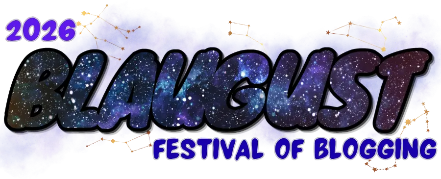

Taxodium
That the powerful play goes on, and you may contribute a verse.
Zine / Emacs / Album / 博客 / 旅行 / 日常 / 阅读和观影 / 杂文

(っ. -｡)
〆(・∀・)
Blaugust 開始了！一起來參加吧！讓我看看八月能不能拿到銅奬 (*/ω＼)
- 香港雞公嶺
- 給博客添加純文本版本
- 在 Emacs 中用漢典查詢倉頡碼
- Album#48Winter Sweet
- Album#47收斂水
- Re: Bloggers, can we make better titles for our posts?
- Album#46High Violet
- Zine#56數位園藝
- Blaugust 2026 Feeds以及我是如何用 Elisp 製作的
- Album#45Sweet Sticky Thing
Zine
一起网上冲浪吧！ (ﾉ>ω<)ﾉ
- Zine 创刊语
- Zine#1
- Zine#2
- Zine#3
- Zine#4
- Zine#5
- Zine#6
- Zine#7
- Zine#8
- Zine#9
- Zine#10
- Zine#11
- Zine#12
- Zine#13
- Zine#14
- Zine#15
- Zine#16
- Zine#17
- Zine#18
- Zine#19
- Zine#20
- Zine#21
- Zine#22
- Zine#23
- Zine#24
- Zine#25
- Zine#26
- Zine#27
- Zine#28
- Zine#29
- Zine#30
- Zine#31
- Zine#32
- Zine#33
- Zine#34
- Zine#35
- Zine#36
- Zine#37
- Zine#38
- Zine#39
- Zine#40
- Zine#41
- Zine#42写 Zine 的好处
- Zine#43桌面变形记
- Zine#44善意、远离手机、阅读、万圣节主题
- Zine#45文章裡的 Emoji、想要匿名寫作
- Zine#46Cloudflare 故障、饭后散步 2500 步
- Zine#47规律性地写作、纯文本网站、博客的气味
- Zine#48纯文本邮件、变更域名、API 文档
- Zine#49反對闡釋、RSS 日报、布洛芬 vs 对乙酰氨基酚、關於品味
- Zine#50博客宣言、AI 對个人网站的冲击、not be a prick
- Zine#51把愛傳給「未來的自己」、優秀的網站設計原則
- Zine#52我们都无法成为大人
- Zine#53第一次录󠄃製視頻、要請作者喝咖啡嗎？
- Zine#54世界杯、純文本、隨機頁面、巫師三
- Zine#55嘗試才是罕見的
- Zine#56數位園藝
- Zine#57IndieWeb Is Punk、用你的錢包去投票、為終端瀏覧器优化網站
Emacs
;; Happy hacking , Emacs ♥ you!
- 在 Emacs 中用漢典查詢倉頡碼
- Elfeed 4.0.0 使用分享
- 导出 Elfeed 选中条目到 GitHub Page 作为 Reading List
- 在 Emacs 中用 Elfeed 阅读订阅流
- 让博客的代码高亮适配主题
- 如何上手 Emacs
- Emacs: 封装 webjump 搜索 symbol-at-point
- 使用 org-protocol 生成听歌排行
- Emacs Elevator PitchOnly Emacs can save your soul
- 结合 denote 和 org-publish 写博客
- Emacs 实时预览 markdown
- 在 Emacs 随机切换主题
- 使用 gptel-request 封装一个翻译方法
- Emacs 中配置 .authinfo.gpg
- Translation In Emacs
- 使用 org-publish 发布博客
Album
Take a sad song and make it better.
Remember to let her into your heart,
Then you can start to make it better.

Adrianne Lenker

Lauryn Hill

Glenn Gould

Fifi Rong

The Fur.

The Jesus and Mary Chain

D'Angelo

D'Angelo

D'Angelo

方大同

頭士奈生樹

唐晓诗

李泰祥

JOYCE 就以斯

Joyce Cheung

Kiri T

方大同 (Khalil Fong)

方大同 (Khalil Fong)

山下達郎(Tatsuro Yamashita)

陈小霞

Heavenstamp

Heavenstamp

MØ

顾忠山 / 红节奏The Red Groove Project

T-SQUARE

天然味道

渋さ知らズ

河边走

Oliva Dean

景德镇文艺复兴

RYCE / The Guest Room / Adison Maxwell / Bay Area Rising

chilldspot

FunkyMo

苏运莹

陶玙TAOTAO

DJ 小女孩

Fayzz

RAYE

Joyce Cheung

Joyce Cheung

Bialystocks

Ryo Fukui

Don Shirley

表情银行MimikBanka

都市零件派对

周欣韧

Cosmo Sheldrake

Cosmo Sheldrake

汪川

Brett Anderson

Nujabes

The National

蛋堡 (Soft Lipa)

蛋堡 (Soft Lipa)
日常
不是只有在外面到处跑才叫冒险。
所谓冒险，
就是一连串这种烂透了的日常。
- 日常#0新系列、iOS26、RSS、睡眠、红烧鸡翅、读者来信
- 日常#1最近买的书、死神来了、空洞骑士、娃娃菜、博客改动、多邻国
- 日常#2邻居的求婚、老爸的手机
- 日常#3身上的红点、南瓜汤、胡辣汤、猪扒饭、纸上染了蓝、空洞骑士
- 日常#4皮肤手术、酸汤牛肉、香菇鸡块、空洞骑士
- 日常#5PL-330 收音机、咖啡、通关空洞骑士、CITY 完结
- 日常#6牙周问题、订阅流整理、Blaugust 回顾、写作的艰难、小米手环表带
- 日常#7手写博客文章、跑步、牙齿、煲汤
- 日常#8Zen 浏览器、白描、博客图片压缩脚本
- 日常#9霜打菜、跑步、关于博客、Advent of Code 2025
- 日常#10香港迪士尼、莽山五指峰
- 日常#11香港赤柱、胶片
- 日常#12苹果设备的联动、最近做的一些菜式、死亡搁浅、深圳美术馆看展
- 日常#13I Am Here 深圳 Live
博客
You should start a blog.
Having your own little corner of the internet is good for the soul!
- 給博客添加純文本版本
- Re: Bloggers, can we make better titles for our posts?
- 让博客的代码高亮适配主题
- 博客春节彩蛋：贴春联
- 关于博客开头的 AI 总结
- 博客静态资源缓存问题
- 错误发布的订阅流
- XSLT 将要被废弃、更新订阅页面
- 关于 "Give footnotes the boot" 的思考
- 给博客添加 Webmention
- 更新博客 License
- 我的博客设计
- 结合 denote 和 org-publish 写博客
- 移除博客的留言
- 验证你的 RSS/Atom feed 是否有效
- 让你的 RSS/Atom feed 更好看
- 博客的一些更新
- 给博客添加 dark mode
- 使用 pagefind 添加博客搜索功能
- 使用 org-publish 发布博客
- 用 iframe 显示 HTML 例子
阅读和观影
If you think about it,
the very best books are really just extremely long spells
that turn you into a different person for the rest of your life.
- 近期觀影無間道三部曲、醉好的時光、阿波羅 13 號
- 读《学期作业报告》
- 看《路边野餐》Kaili Blues
- 读《克林索尔的最后夏天》
- 读《悉达多》一首印度的诗
- 《纸上染了蓝》书摘
- 《姥姥的外孙》观后感
- 读书应该是一种享受
杂文
Is it any good?
yes!
- Blaugust 2026 Feeds以及我是如何用 Elisp 製作的
- 請開啟 JavaScript 以繼續搜尋
- 小象超市鮮啤簡評
- TIL: lang 属性會影响文字的尺寸
- 分享一些 Zen 瀏覧器好用的功能Boost 自定義頁面樣式、Live Folder
- 上手倉頡輸入法
- TIL: 移除图片下方多余的空白
- CSS Naked Day 2026
- Kagi Translate 使用分享
- 怀念方大同
- 也许你想试试 Kagi？
- Advent of Code 2025 day12 and Review
- Advent of Code 2025 day11
- Advent of Code 2025 day10
- Advent of Code 2025 day9
- Advent of Code 2025 day8
- Advent of Code 2025 day7
- Advent of Code 2025 day1 ~ day6
- 饮料极简主义多喝热水
- 时间是挤出来的
- 听「272-最优秀的学生为何失去了读书的能力？」
- Blaugust 2025 Reflections #2
- Blaugust 2025 Reflections #1
- Blaugust 2025 Reflections #0
- 参加 Blaugust 2025
- 三十岁的日常
- macOS 下个人开发环境搭建
- 注释是你的好朋友
- package.json 中依赖版本的记忆技巧
- Answer: 博客作者呀，我想采访你这 9 个问题！
- 我的键盘
- 一次海外购物经历
- 胃镜检查
- word-break: break-all;
- Emoji 正则匹配
- Date 的踩坑
- 往 PDF 上添加 form field
- tldr effective-shell
- 关于页面打印
- Git 的校验实践
- Windows 下个人开发环境搭建
- Flex 布局下，元素溢出的问题
- 单调栈
- Display Blob as Image
- V2ray with Caddy + HTTP2 + TLS
- 2022 CSS 技术一瞥
- Monorepo
- 关于 Cookie 的一些知识
- KPM 算法的 JS 实现
- JS 中的定时任务
- Vue Router 为什么切换路由不刷新页面
- 使用 GitHub Actions 部署博客到 GitHub Pages
- 部署前端静态文件的简单步骤
- SVN Cheatsheet
- 根据国家显示国旗图标
- 制作 SVG 地图轮廓
- About